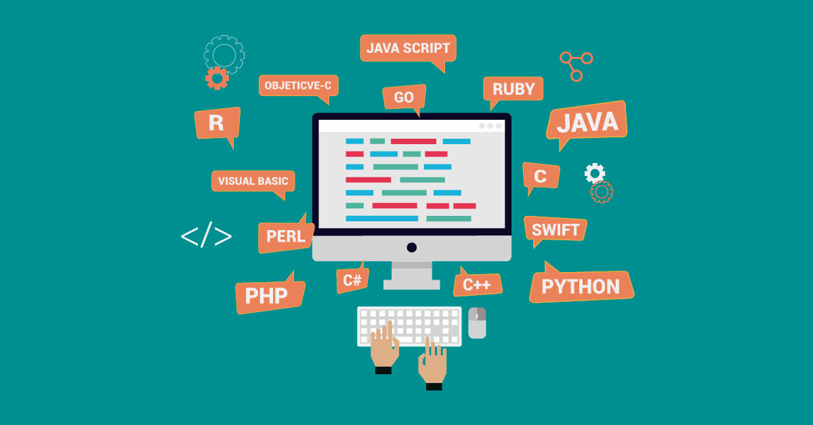

Dominar técnicas de programação e ir além de escrever linhas de código. E a arte de estruturar o pensamento lógico para criar softwares eficientes, limpos e inovadores, transformando problemas complexos em soluções inteligentes.
Cada linguagem de programação foi criada com um propósito específico e se destaca em diferentes áreas do desenvolvimento de software: